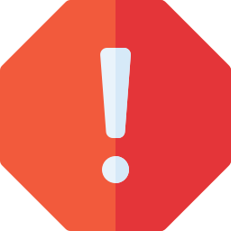

Oups, erreur 404:
La page désirée est inconnue au bataillon !
Peut-être a-t-elle été renommée sous un autre nom ?
Peut-être a-t-elle été déplacée vers un autre endroit ?
Peut-être a-t-elle été supprimée définitivement ?